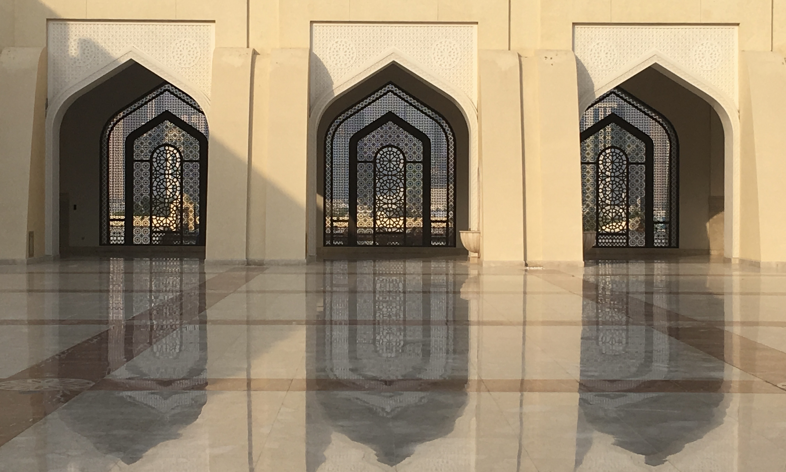
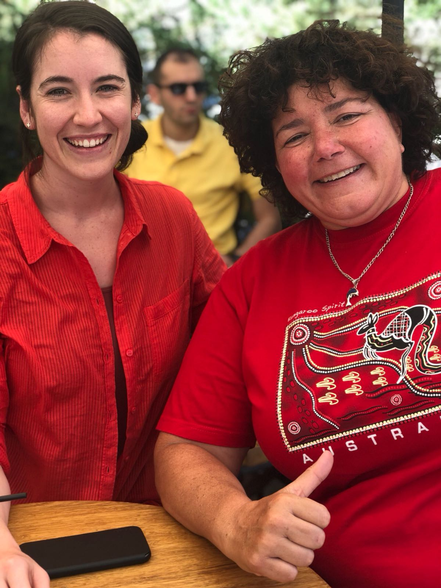
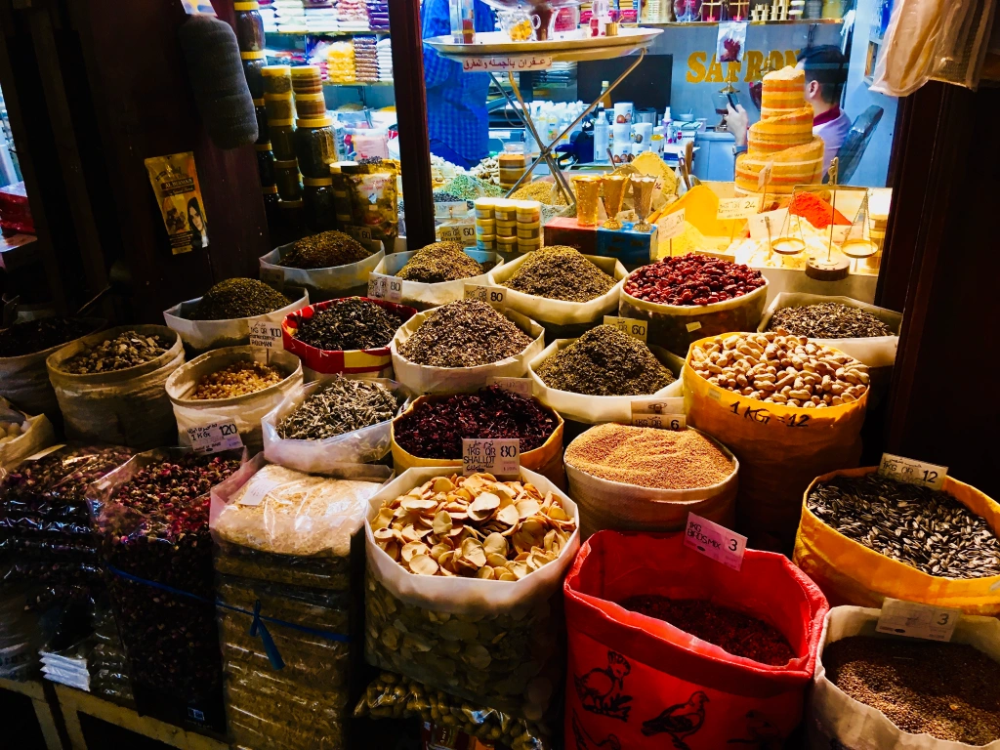
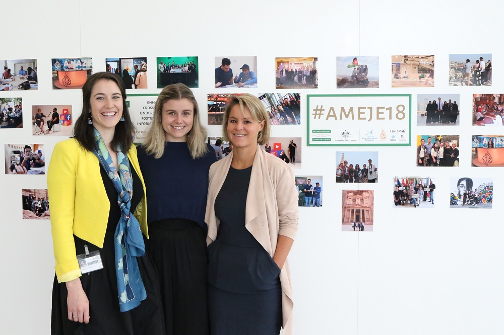

Contents
In July 2018, Gabrielle was part of the Australia-Middle East Journalism Exchange (AMEJE) program.
It allowed for a taste of the Middle East, to effectively report to an Australian audience by providing a true understanding of the issues, improving cross cutural understanding and being better informed.
While in Qatar and Jordan, the AMEJE cohort took part in varied professional and cultural activities designed to build their skills and knowledge, and enhance their career prospects.
They devoured the knowledge and experience of journalists in action at the Al Jazeera newsroom in Doha and Arab Reporters for Investigative Journalism (ARIJ) in Amman; visited cultural institutions, mosques, Petra, and the Jerash refugee camp in Jordan; and worked collaboratively on journalism projects with like-minded students at the Middle East University in Amman.
Honour Crimes
In Amman, Gabrielle reached out to Rana Husseini, a crime reporter with the Jordan Times. For the past 20 years, she has been an activist working to expose so-called honour crimes in her country. Her work has given voice to victims and has helped drive changes in the way these crimes are treated in court. It was an inspiration to have met with her.
Gabrielle's interview with Rana Husseini
Lean Arabic
Wanting to have some basic Arabic, Gabrielle undertook a beginner’s course with the Institute of Australia Middle East. From what she learnt, Gabrielle produced some easy-going podcasts with her teacher, Mohanned Kassar, to provide conversational basics for interested minds.
Perhaps it will come in handy for a brief stopover in Dubai or when inclined to visit the wonderous Petra for yourself – have a listen!
Gabrielle joined the #AMEJE18 study tour for the opportunity to develop a better understanding of the Middle East and its people, and to learn how to better uncover and report a range of stories for audiences back home. In the process, she experienced first-hand the change that a journalist can make.
The value Gabrielle took from the #AMEJE18 tour is immeasurable, and was only possible thanks to the support of the Council for Australian-Arab Relations.
